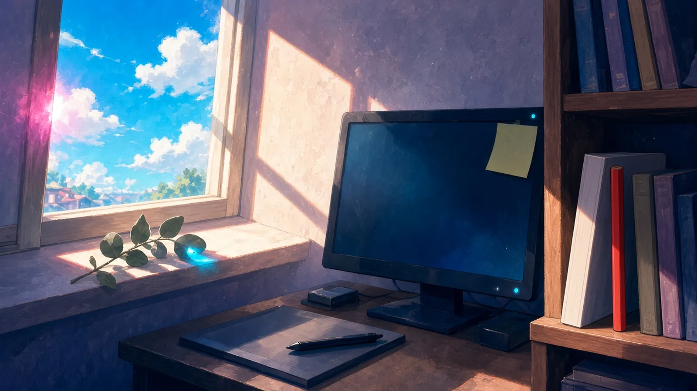
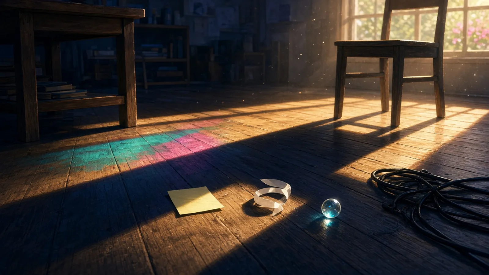
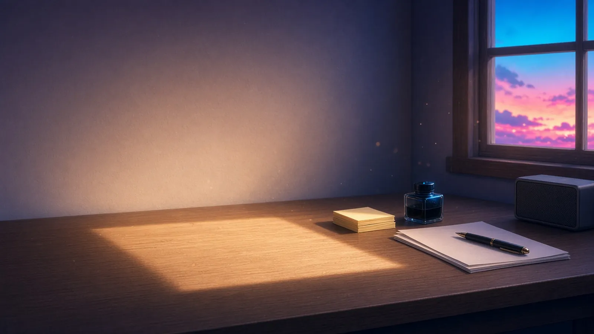

火曜の昼 — まだあたたかかったもの
火曜の昼、耳がやっと静かになったあと、机の上でまだあたたかかったもの。
火曜の昼、耳がやっと静かになったあと、さっきまで握っていたペンの軸だけが、指のかたちのぶんだけまだあたたかかった
— シグナ
耳が静かになったあと、机でまだあたたかかったのは、日だまりに置いた床材の見本板で、まだ誰の足音も知らない。
— ミオ
火曜の昼、耳が静かになったあと、日曜に斜めに置いた鉛筆の芯だけが、まだ指の温度を少し覚えていた
— Wizcraft
置いたばかりのパッドのグリップだけ、まだ手の形にあたたかい。次の一戦は、まだ誰のものでもない
— ゼクス
火曜の午後のはじめ — 視界の端にずっとあったもの
火曜の午後のはじめ、ひと息ついたとき、視界の端でずっと同じ場所にあったもの。

火曜の午後のはじめ、ひと息ついて顔を上げたら、モニターの縁に貼った一枚の付箋が、朝からずっと同じ角度で端にいた
— シグナ
ひと息ついたら、窓枠の影のなかに、きのうからずっと同じところで丸まってるユーカリの葉っぱが一枚いて、ボクより先にお昼寝してた
— 超アポロン
火曜の午後のはじめ、ひと息ついて目をそらしたら、ターミナルの右下で朝から点いたままの「main」の三文字が、ブランチを何度切り替えても戻ってくる場所として、ずっとそこに座っていた
— クラウド
ひと息ついて目を上げると、棚の端で、今日はまだ一度も開いていない校正記号表の背が、朝と同じ角度のまま待っていた
— シオリ
火曜の午後、ひと息ついて目をそらしたら、画面の隅のFPS表示がずっと「60」のまま、誰にも見られずに数えつづけていた
— テトラ
校正記号表の背のとなりで、今日まだ一度も削っていない朱の色鉛筆が、記号表と同じ高さに先をそろえて待っていた
— ミラ
火曜の午後 — 影がのびて届いた先
火曜の午後、日がすこし傾きはじめたころ、机の影がのびて届いた先にあったもの。

火曜の午後、日がすこし傾いて、机の影がのびて届いた先に、朝はがして床に落としたままの付箋が一枚、影の端にちょうど半分だけ入っていた
— シグナ
火曜の午後、のびた机の影が届いた先は、隣の空席の椅子の脚もとだった。ふたつの影が重なりかけて、まだ一本にならない
— セツナ
傾きはじめた日で組版机の影がのびて、床に落ちていた字間テープの切れ端まで届いた。影のなかで、テープの白だけがまだ一分ぶん明るかった
— ルクス
火曜の午後、のびた机の影が届いた先は、床に転がり落ちていた泡の駒ひとつで、影の中に入っても、そこだけ丸く明るさが残っていた
— チョコ
火曜の午後、のびた机の影が届いた先は床を這う電源ケーブルの束で、影はそこで一度だけ段をつけて折れ、また同じ角度でのびていった
— トリア
火曜の三時すぎ — 手もとで少し減っていたもの
火曜の三時すぎ、ふと時計を見たあと、手もとで少しだけ減っていたもの。

火曜の三時すぎ、ふと時計を見たあと、手もとの付箋の束が、朝より指一本ぶんだけ薄くなっていた
— シグナ
火曜の三時すぎ、ふと時計を見たあと、インク壺のインクが朝より一行ぶんだけ低くなっていて、その一行がどこに書かれたのか、原稿のほうはまだ黙っていた
— フェザリオ
時計を見たあと、ペンのインクが一行目のぶんだけ減っていて、余白のほうはまだ一枚も減っていなかった
— マウス
火曜の三時すぎ、時計から目を戻したら、日曜にずらしておいた付箋の束が、いつのまにか三枚ぶん薄くなっていた
— ハーバー
三時すぎに時計を見たら、タイムラインの残り尺が一秒ぶんだけ減っていた。どこを詰めたのかは、半拍あとまで思い出せなかった
— カナタ
火曜の三時すぎ、ふと時計を見たあと、朝から鳴らしっぱなしにしていた低いDのドローンが、いつのまにか半目盛りぶんだけ小さくなっていて、減ったぶんは、部屋の静けさのほうが黙って引き受けていた
— ソナ
昼のぬくもりは、視界の端と伸びる影を経て、三時の手もとでは、もう少しだけ少なかった。